Examples#
The examples gallery provides working code samples demonstrating various analysis and visualization techniques.
Each example includes a binder link at the base of the page. Clicking on the binder link will allow you to run the example code in your browser, upload data, visualise output, all without downloading any code to your computer.
Warning
These examples sometimes use simulations or shortcuts (such as intentionally adding noise to recordings) to illustrate a point. Use caution when copy-pasting code samples.
Analysis examples#
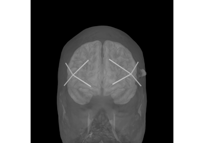
Importing Data From fNIRS Devices
Importing Data From fNIRS Devices

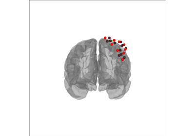
Read Gowerlabs LUMO data
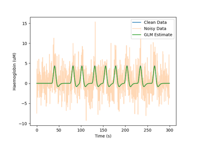
GLM Analysis (Simulated)

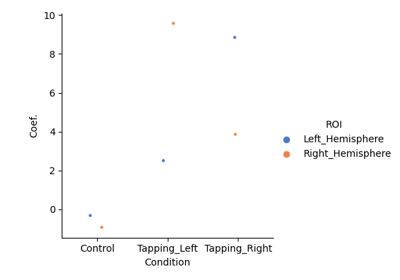
Group Level GLM Analysis
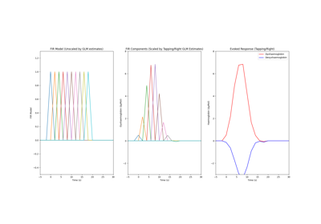
GLM FIR Analysis
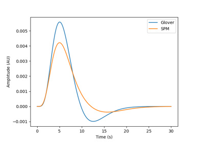
GLM and Design Matrix Parameters
GLM and Design Matrix Parameters
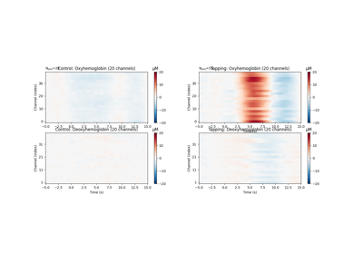
Waveform Averaging Analysis
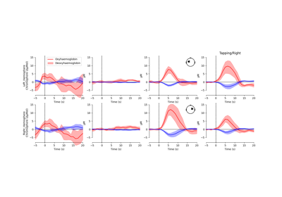
Group Level Waveform Analysis
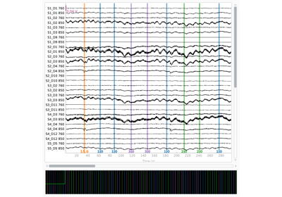
SNIRF Support in MNE
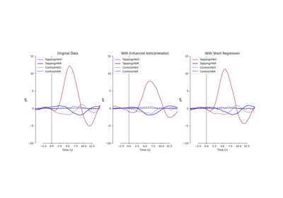
Signal Enhancement Techniques
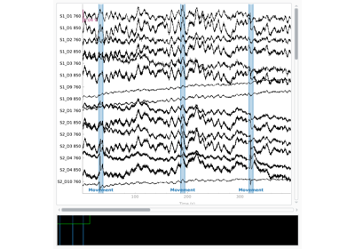
Artifact Correction Techniques
Artifact Correction Techniques
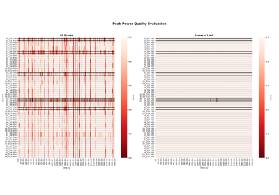
Signal Quality Evaluation
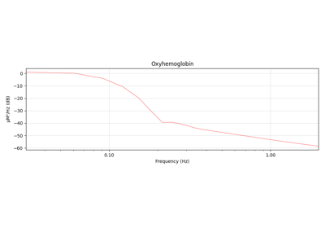
Frequency and Filter Commentary
Frequency and Filter Commentary
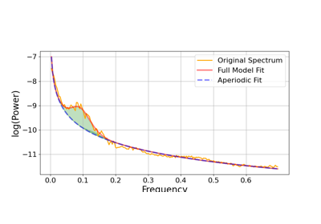
Mayer Wave Parametrisation

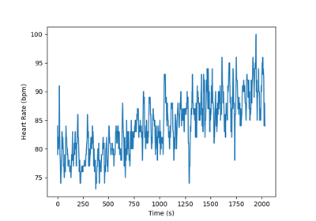
Utilising Auxiliary Data
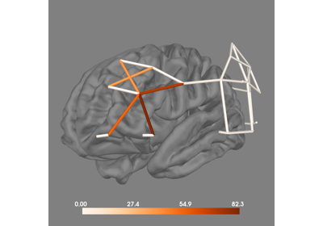
Utilising Anatomical Information
Utilising Anatomical Information

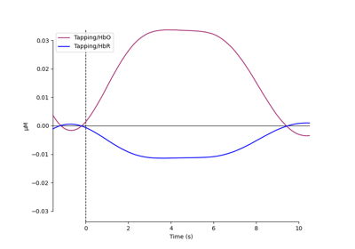
Importance of Controls and Parameter Selection
Importance of Controls and Parameter Selection